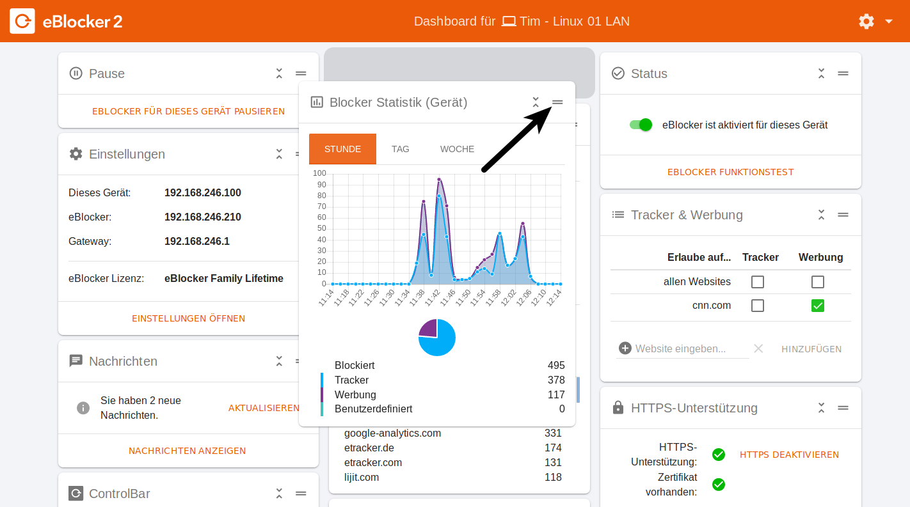
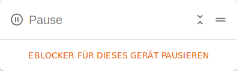
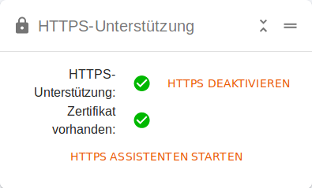
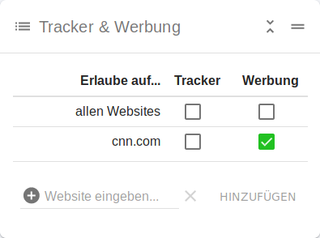
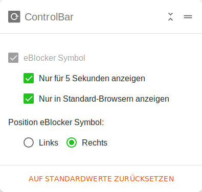
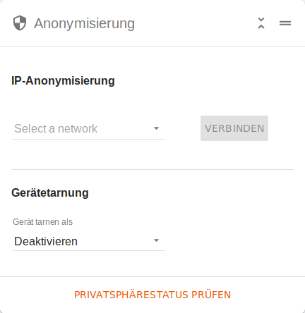
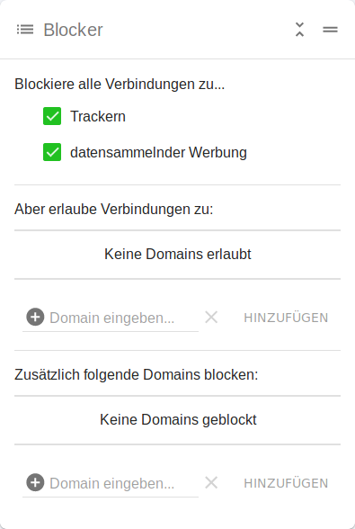
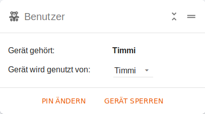
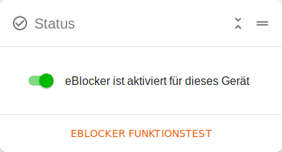
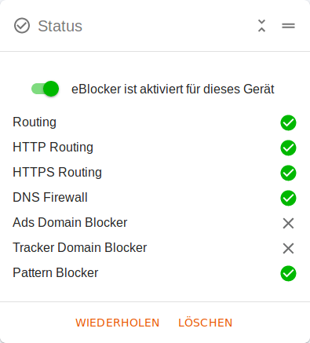

Deutsch | English
Das eBlocker Dashboard ist die Steuerzentrale für Ihr Gerät und Ihren eBlocker. Hier können Sie alle wichtigen Informationen einsehen und Änderungen vornehmen.
Das Dashboard können Sie wie folgt aufrufen:
Tipp: Öffnen Sie das eBlocker Dashboard über die IP-Adresse des eBlockers und legen Sie sich ein Lesezeichen zu dem eBlocker Dashboard in Ihrem Browser an.
Auf dem Dashboard werden sogenannte Karten angezeigt, welche man oben rechts auf der Seite mit dem Dashboard Icon ein- und ausblenden lassen kann.

Jede Dashboardkarte kann individuell auf dem Dashboard positioniert werden. Dazu klicken Sie oben rechts die Karte an und verschieben die Karte mit gedrückter linker Maustaste. Um die Karte an der neuen Position abzulegen lassen Sie einfach die linke Maustaste wieder los.

Jede Dashboardkarte kann zu- und wieder aufgeklappt werden, damit Sie auf Ihrem Dashbaord Platz sparen.
Zum schließen einer Dashboardkarte klicken Sie auf die Pfeile. Sie sehen nun nur noch den Titel der Dashboardkarte. Zum öffnen der Dashboardkarte klicken Sie wieder auf die Pfeile und die Dashboardkarte wird aufgeklappt.

Einige Karten für das Dashboard werden nur bei aktivierter eBlocker HTTPS Funktion angezeigt, da deren Funktion die Aktivierung der eBlockers HTTPS Funktion voraussetzt.
Folgende Karten bietet Ihnen das eBlocker Dashboard:
Pause

Hier können Sie den eBlocker für dieses Gerät einige Minuten pausieren. Wenn die Pause aktiviert wurde, dann wird der eBlocker für 5 Minuten pausiert. Man kann die Pause um je 5 Minuten verlängern, oder verkürzen. Nach dem Ablauf der Zeit wird die Pause beendet, oder Sie klicken auf den Link „Pause beenden“.
Einstellungen

Hier können Sie die IP-Adressen Ihres Gerätes, des eBlockers und des Gateways (Ihr Router) sehen. Außerdem wird hier auch Ihre eBlocker Lizenz angezeigt. Sie werden auf dieser Karte auch darauf hingewiesen wenn Ihre Lizenz demnächst abläuft.
Mit dem Link „Einstellungen öffnen“ gelangen Sie zu den eBlocker Einstellungen.
Nachrichten

Hier werden Sie über Meldungen und Nachrichten des eBlockers informiert. Klicken Sie auf den Link „Nachrichten anzeigen“ um die Nachrichten zu lesen.
Nachrichten können zum Beispiel wichtige Systemereignisse, aber auch Informationen zu einem Update sein.
HTTPS-Unterstützung
(Nur für eBlocker Pro und Family - Nur vorhanden wenn die HTTPS Funktion aktiviert wurde)

Mit Hilfe dieser Karte können Sie überprüfen ob das eBlocker HTTPS Zertifikat richtig hinterlegt wurde. Bei aktivierter eBlocker HTTPS Funktion sollten die beiden Punkte „HTTPS-Unterstützung“ und „Zertifikat vorhanden“, wie oben im Bild, bestätigt sein. Die Überprüfung des Zertifikats durch den eBlocker kann bis zu fünf Sekunden dauern.
Sie können über diese Karte auch die HTTPS Funktion für dieses Gerät deaktivieren, wieder aktivieren, oder gegebenenfalls das eBlocker Zertifikat herunterladen, um es anschließend auf diesem Gerät zu hinterlegen.
Tracker & Werbung
(Pattern Blocker - Nur für eBlocker Pro und Family - Nur vorhanden wenn die HTTPS Funktion aktiviert wurde)

Bei aktivierter eBlocker HTTPS Funktion können Sie hier für Webseiten Ausnahmen anlegen. Zum Beispiel können Sie hier für eine Domain Tracker und Werbung erlauben, oder nur die Werbung für eine Domain erlauben.
Controlbar

Hier können Sie das eBlocker Controlbar Icon auf den Webseiten aktivieren, oder deaktivieren. Sie können zusätzlich festlegen ob das eBlocker Icon nur für 5 Sekunden, nur in Standard-Browsern, oder links oder rechts auf der Webseite angezeigt werden soll.
Anonymisierung

Hier können Sie für das Gerät die Anonymisierung über das Tor-Netzwerk oder einer VPN-Verbindung aktivieren. VPN-Verbindungen müssen Sie dafür zuvor in den eBlocker Einstellungen im Menü „IP-Anonymisierung“ > Reiter „VPN-Netzwerk“ anlegen.
Nur bei aktivierter HTTPS Funktion des eBlockers Pro und Family sehen Sie in dieser Karte auch die Gerätetarnung. Hier können Sie festlegen ob Webseiten Sie gegebenenfalls als ein ganz anderes Gerät erkennen sollen. So können Sie zum Beispiel mit Ihrem PC surfen, aber die Webseite erkennt Sie als ein iPhone.
Zusätzlich können Sie hier mit dem Link „Privatsphäre Status prüfen“ einige interessante Informationen einsehen, aber auch überprüfen ob Ihre Verbindung wirklich durch das Tor-Netzwerk, oder eine VPN-Verbindung, geschützt wird.
Blocker
(Domain Blocker - Nur für eBlocker Pro und Family)

Hier können für dieses Gerät bestimmen ob der eBlocker Tracker und oder datensammelnde Werbung blockieren soll. Sie können auch bestimmt ob der eBlocker für bestimmte Domains deaktiviert, oder aktiviert sein soll.
Beachten Sie bitte dass Sie hier nicht für eine bestimmte Domain alle Tracker oder datensammelnde Werbung deaktivieren, sondern nur bestimmte Domains blocken, oder erlauben.
Beispiel: Wenn Sie hier die Domain xyz.com erlauben, dann wird zwar die Verbindung zu der Domain xyz.com erlaubt, aber wenn von dieser Domain nun die Tracker oder Werbung von einer anderen Domain nachgeladen werden, dann wird dies vom eBlocker unterbunden.
Blocker Statistik (Gerät)
(Domain und Pattern Blocker - Nur für eBlocker Pro und Family)

Hier können Sie eine Statistik der eBlocker Blocker Funktion für dieses Gerät einsehen. Es werden Ihnen die Informationen der letzten Stunde, des letzten Tages (24 Stunden) und der letzten Woche angezeigt.
Es spielt bei der Anzeige keine Rolle ob Sie nun die Pattern- oder Domain Blocker benutzen.
Blocker Statistik (Gesamt)
(Domain und Pattern Blocker - Nur für eBlocker Pro und Family)

Hier können Sie die gesamte Blocker Statistik des eBlockers seit dem letzten Zurücksetzten des eBlockers einsehen. Es werden von allen Geräten in Ihrem Netzwerk die Informationen zusammen gerechnet.
Außerdem können Sie hier die Top 25 der vom eBlocker unterdrückten Tracker- und Werbedomains von diesem Gerät einsehen.
Es spielt bei der Anzeige keine Rolle ob Sie die Pattern- oder die Domain Blocker benutzen.
eBlocker Mobile
(Nur vorhanden wenn die eBlocker Mobile Funktion aktiviert wurde)

Diese Karte erleichtert Ihnen die Einrichtung der eBlocker OpenVPN Konfiguration. Hier können Sie die OpenVPN Konfiguration für Ihr Gerät herunterladen, um diese anschließend in einer OpenVPN App zu hinterlegen.
Benutzer
(Nur für eBlocker Family - Wenn ein Gerät einem Benutzer zugewiesen ist)

Diese Karte wird angezeigt, wenn ein eBlocker einem Benutzer zugewiesen wurde. Es wird der Benutzer angezeigt, man kann hier ein Gerät übernehmen, die PIN ändern, oder dieses Gerät sperren.
Um ein Gerät übernehmen zu können, muss Minimum ein weiter Benutzer angelegt werden.
Online-Zeit
(Nur für eBlocker Family - Wenn ein Gerät einem Benutzer zugewiesen ist)

Diese Karte wird angezeigt sofern der eBlocker einem Benutzer zugewiesen wurde und für dem Benutzer ein Zeitkontingent erstellt wurde. Auf dieser Karte können Sie die Online-Zeit starten und wieder stoppen. Außerdem können Sie Details einsehen wie die Zeit welche zur Verfügung steht, wie viel schon von dem Zeitkontingent verbraucht wurde und den erlaubte Zeitraum.
Status


Auf dieser Karte können Sie den eBlocker für ein Gerät deaktivieren, oder einen Funktionstest ausführen. Der Funktionstest benötigt einige Sekunden und zeigt Ihnen um Anschluss eine kurze Auswertung der geprüften Funktionen an.